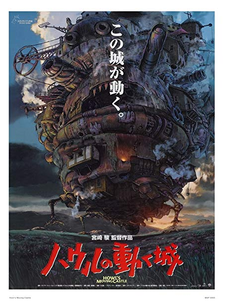
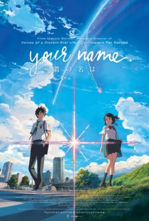
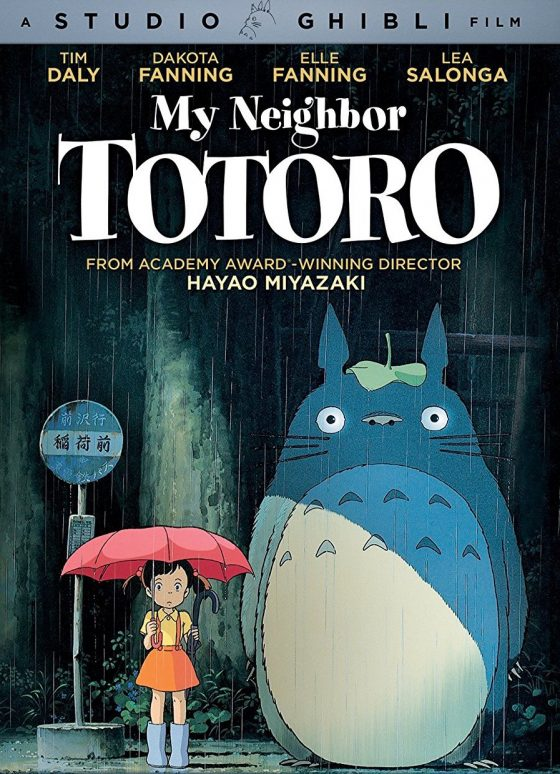
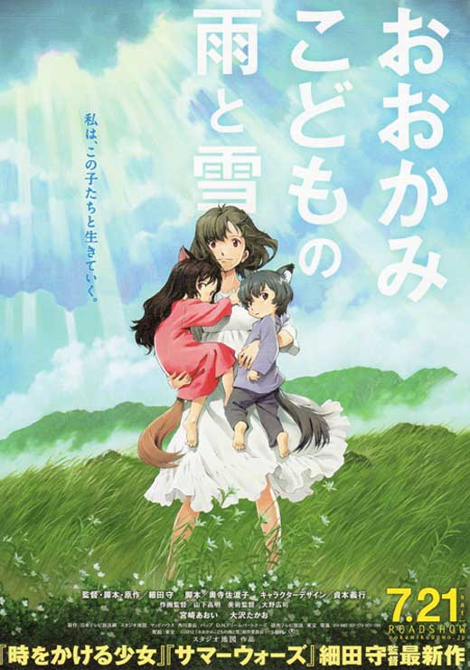
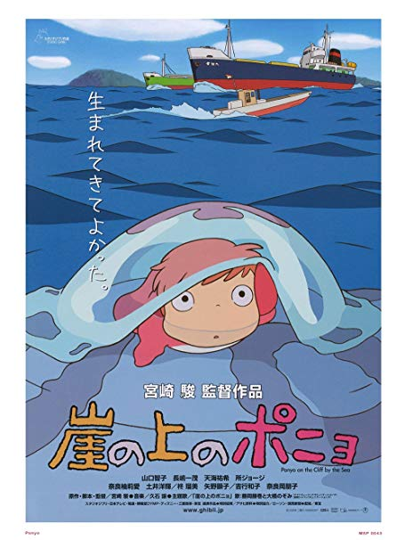

SPIRITED AWAY In this animated feature by noted Japanese director Hayao Miyazaki, 10-year-old Chihiro (Rumi Hiiragi) and her parents (Takashi Naitô, Yasuko Sawaguchi) stumble upon a seemingly abandoned amusement park. After her mother and father are turned into giant pigs, Chihiro meets the mysterious Haku (Miyu Irino), who explains that the park is a resort for supernatural beings who need a break from their time spent in the earthly realm, and that she must work there to free herself and her parents. |

HOWLS MOVING CASTLE Sophie (Emily Mortimer) has an uneventful life at her late father's hat shop, but all that changes when she befriends wizard Howl (Christian Bale), who lives in a magical flying castle. However, the evil Witch of Waste (Lauren Bacall) takes issue with their budding relationship and casts a spell on young Sophie, which ages her prematurely. Now Howl must use all his magical talents to battle the jealous hag and return Sophie to her former youth and beauty. |

KIMI NO NAWA (YOUR NAME) A teenage boy and girl embark on a quest to meet each other for the first time after they magically swap bodies.. |
|---|---|---|
|

MY NEIGHBOUR TOTORO This acclaimed animated tale by director Hayao Miyazaki follows schoolgirl Satsuke and her younger sister, Mei, as they settle into an old country house with their father and wait for their mother to recover from an illness in an area hospital. As the sisters explore their new home, they encounter and befriend playful spirits in their house and the nearby forest, most notably the massive cuddly creature known as Totoro. |

WOLF CHILDREN Hana marries a wolf man and raises their two children alone after he dies. They move to the countryside and the children have adventures in the woods and at school. |

PONYO DescriptionDuring a forbidden excursion to see the surface world, a goldfish princess encounters a human boy named Sosuke, who gives her the name Ponyo. Ponyo longs to become human, and as her friendship with Sosuke grows, she becomes more humanlike. Ponyo's father brings her back to their ocean kingdom, but so strong is Ponyo's wish to live on the surface that she breaks free, and in the process, spills a collection of magical elixirs that endanger Sosuke's village. |
 ANIME CATALOGUE
ANIME CATALOGUE